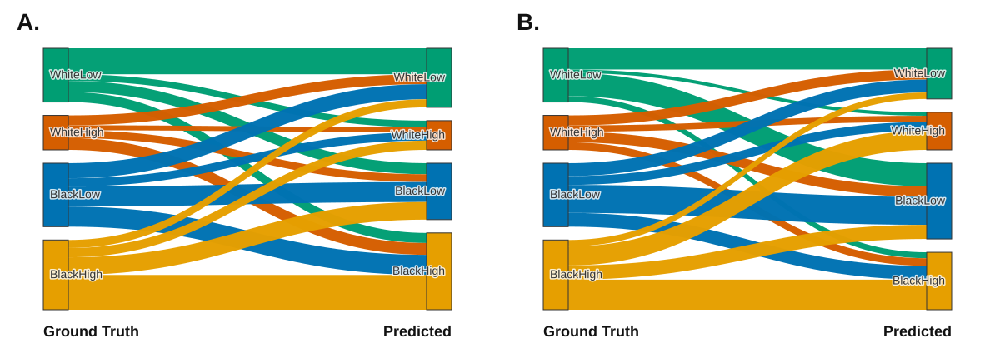

结论摘要
复现结论：数据过滤和 OT 方法链路可以复现，A/B 图的视觉结构已经重建；但原文 Figure 3A/3B 的精确流带宽度无法仅凭论文唯一推出。
最接近原文第一处数字的是 criminal_only_compas_groups：原文 WhiteLow -> BlackHigh 为 43.8%，本复现为 46.94%。但原文 BlackHigh -> WhiteLow 为 48.3%，本复现最佳分支仍只有 8.02%。这说明本文实验存在未公开的实现细节。
数据核对
数据来自 ProPublica 的 compas-analysis 仓库，使用标准过滤条件后，关键计数与论文附录一致。
-30 <= days_b_screening_arrest <= 30
is_recid != -1
c_charge_degree != "O"
score_text != "N/A"实验原理
论文比较同一批个体上的两个 policy：F_true 拟合真实 two-year recidivism，F_compas 拟合 COMPAS 二元风险标签。这里将 Low 作为低风险，将 Medium/High 合并为高风险。
每个 policy 输出二分类概率向量：
F(x_i) = [1 - p_i, p_i]
C_ij = ||F_true(x_i) - F_pred(x_j)||_2二分类时，这个代价与 |p_i - p_j| 只差常数因子，因此脚本用一维分位数匹配精确求解 equal-mass empirical optimal transport。得到 coupling 后，再按四个 subgroup 聚合：WhiteLow、WhiteHigh、BlackLow、BlackHigh。
脚本同时保存 raw transport mass 分解和 mass * feature_distance 的 group-wise bias 分解。后者更接近论文的 individual/group bias 定义。
Figure 3A/3B 风格图

{kind=link}
{kind=link}
Equal Opportunity Classifier 推测
论文说第三个 logistic regression 训练在 COMPAS labels 上，并使用 Zafar et al. 的 equal opportunity constraint。论文背景部分将 Equal Opportunity 定义为真实正类条件下不同敏感组预测正率相等，也就是 equal TPR，等价于 equal FNR。
查到的 Zafar 公开实现是 fair-classification。其中 disparate_mistreatment 支持 FPR/FNR 约束，COMPAS demo 在 propublica_compas_data_demo。因此本复现推测 Figure 3B 更接近 FNR/TPR constraint，而非普通 unconstrained logistic regression。
由于原文未给代码、划分、阈值、tau/mu 等参数，本复现使用一个透明代理模型：
logistic loss on COMPAS label
+ penalty * (mean_score_black_true_positive - mean_score_white_true_positive)^2与原文数值对比
| Metric | Paper | Expanded | EO proxy | Paper-ish | Criminal only | Paper model + criminal distance |
|---|---|---|---|---|---|---|
| WhiteLow_to_BlackHigh_bias_share | 43.80 | 23.53 | 27.09 | 17.38 | 46.94 | 21.66 |
| BlackHigh_to_WhiteLow_bias_share | 48.30 | 9.81 | 15.39 | 14.86 | 8.02 | 6.51 |
| BlackHigh_vs_BlackLow_mean_bias_pct | 5.88 | 65.38 | 50.05 | -11.25 | 311.90 | 92.19 |
| WhiteLow_vs_WhiteHigh_mean_bias_pct | 4.92 | -30.59 | -29.72 | -15.50 | -74.08 | -41.17 |
分支汇总
| Variant | Mass WL -> BH | Mass BH -> WL | Bias WL -> BH | Bias BH -> WL | Black High vs Low | White Low vs High |
|---|---|---|---|---|---|---|
| expanded_compas_groups | 16.84 | 11.04 | 23.53 | 9.81 | 65.38 | -30.59 |
| expanded_equal_opportunity_proxy_compas_groups | 20.82 | 17.61 | 27.09 | 15.39 | 50.05 | -29.72 |
| paperish_compas_groups | 13.08 | 9.29 | 17.38 | 14.86 | -11.25 | -15.50 |
| criminal_only_compas_groups | 19.90 | 15.64 | 46.94 | 8.02 | 311.90 | -74.08 |
| paper_model_criminal_distance_compas_groups | 13.08 | 9.29 | 21.66 | 6.51 | 92.19 | -41.17 |
COMPAS 原始错误率背景
直接把 COMPAS Low vs Medium/High 当作二元预测时，Black 与 White 的 FPR/FNR 差异如下。这与 ProPublica 报告里的方向一致：Black false positive rate 更高，White false negative rate 更高。
| Race | FPR | FNR | TPR | TP | FP | TN | FN |
|---|---|---|---|---|---|---|---|
| Black | 0.42 | 0.28 | 0.72 | 1,188.00 | 641.00 | 873.00 | 473.00 |
| White | 0.22 | 0.50 | 0.50 | 414.00 | 282.00 | 999.00 | 408.00 |
矩阵样例
Figure 3A 风格图 mass row percentage
| WhiteLow | WhiteHigh | BlackLow | BlackHigh | |
|---|---|---|---|---|
| WhiteLow | 48.32 | 12.33 | 20.61 | 18.74 |
| WhiteHigh | 28.71 | 14.48 | 22.51 | 34.31 |
| BlackLow | 23.78 | 13.08 | 31.51 | 31.64 |
| BlackHigh | 11.56 | 13.31 | 25.29 | 49.85 |
Figure 3B 风格图 mass row percentage
| WhiteLow | WhiteHigh | BlackLow | BlackHigh | |
|---|---|---|---|---|
| WhiteLow | 39.42 | 6.48 | 43.01 | 11.09 |
| WhiteHigh | 29.20 | 18.13 | 30.66 | 22.02 |
| BlackLow | 20.34 | 13.94 | 44.06 | 21.66 |
| BlackHigh | 9.27 | 27.27 | 20.29 | 43.17 |
Criminal-only bias row percentage
| WhiteLow | WhiteHigh | BlackLow | BlackHigh | |
|---|---|---|---|---|
| WhiteLow | 16.96 | 19.50 | 16.59 | 46.94 |
| WhiteHigh | 8.37 | 13.59 | 10.17 | 67.86 |
| BlackLow | 15.12 | 16.93 | 14.10 | 53.85 |
| BlackHigh | 8.02 | 16.18 | 10.70 | 65.11 |
GitHub 上传建议
建议上传整个 section4_2_compas_reproduction 文件夹，但排除系统文件和缓存。最小可复现集合如下：
report.html：静态 HTML 报告，适合 GitHub Pages 展示。README.md：GitHub 首页说明。reproduce_compas_section4_2.py：复现实验脚本。build_html_report.py：HTML 报告生成脚本。requirements.txt：Python 依赖。REPORT.md与EQUAL_OPPORTUNITY_CLASSIFIER_NOTES.md：文字版说明。outputs/：结果 CSV 和图片。
数据文件是否上传：data/compas-scores-two-years.csv 来自公开 ProPublica 仓库，可以上传；但为了仓库更轻，也可以不上传，让脚本运行时自动下载。若不上传数据，请在 README 中注明来源。
不要上传 .DS_Store、__pycache__/、.pyc、临时目录或本地虚拟环境。
复运行命令
python3 -m pip install -r requirements.txt
python3 reproduce_compas_section4_2.py
python3 build_html_report.py